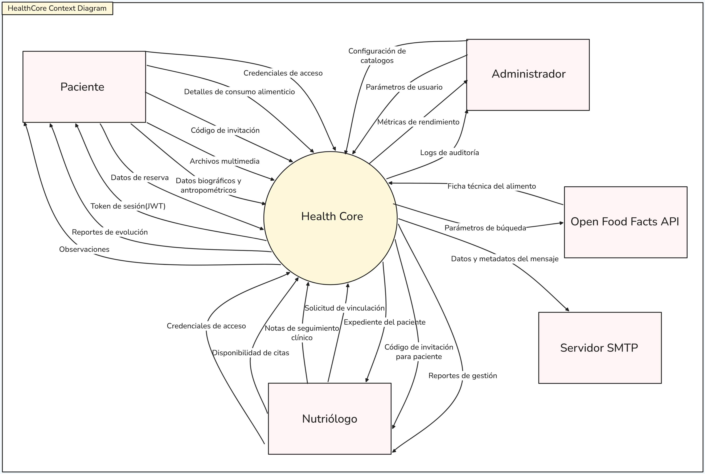

Introducción
Este documento describe formalmente los requisitos y el diseño técnico del sistema HealthCore, un ecosistema integral de salud y nutrición.
Requerimientos
1. Propósito
Definir los requisitos funcionales, no funcionales y reglas de negocio para el desarrollo de Health Core, una plataforma distribuida que centralice el seguimiento nutricional entre pacientes y profesionales.
1.1. Alcance del sistema
El sistema permite el registro de alimentos mediante catálogo local y consulta externa a FatSecret, gestión de citas con control de concurrencia, seguimiento clínico-nutricional y visualización de progreso. El acceso será multiplataforma: Web, Escritorio (Electron) y Móvil (PWA).
2. Descripción General
El sistema se basa en una arquitectura de microservicios utilizando tecnologías heterogéneas como Spring Boot, Python y React. Se desplegará mediante contenedores Docker en entornos Linux.
Funciones del Producto
-
Registro y gestión de perfiles nutricionales.
-
Monitoreo de ingesta calórica y evolución de peso.
-
Vinculación segura mediante códigos QR o numéricos.
-
Agenda de citas con prevención de dobles reservas.
-
Notificaciones automatizadas por correo electrónico.
3. Contexto
Este diagrama muestra los límites del sistema y su interacción con entidades externas (usuarios, otros sistemas, bases de datos externas).

4. Clases de usuario
Definición de los diferentes perfiles de usuario que interactúan con el sistema HealthCore.
-
Paciente / Usuario Final: Persona que registra su alimentación y rutinas.
-
Nutricionista: Profesional que realiza seguimiento y asigna planes.
-
Administrador: Gestión de usuarios y configuración global del sistema.
5. Requisitos funcionales
Listado de capacidades que el sistema debe proveer.
Para el Paciente (Uso Ágil/Móvil)
-
Autogestión de Perfil: Registro de datos biométricos (peso, estatura, edad) y definición de objetivos personales.
-
Vinculación Dinámica: Capacidad de establecer una relación profesional con un nutriólogo mediante el escaneo de un código QR único.
-
Registro Multimodal de Alimentos: Búsqueda en catálogo local o externo (FatSecret) para registrar ingesta calórica diaria.
-
Gestión de Citas: Consulta de disponibilidad en tiempo real y reservación de espacios de atención.
-
Visualización de Progreso: Acceso a reportes gráficos de evolución de peso y cumplimiento calórico por periodos.
Para el Nutriólogo (Uso Operativo/Web-Escritorio)
-
Gestión de Invitaciones: Generación de códigos QR o tokens temporales para vincular nuevos pacientes a su cartera.
-
Control de Agenda: Configuración de días de consulta, horarios y límites de cupos concurrentes.
-
Supervisión de Expediente: Consulta detallada de diarios alimenticios, fotos de progreso y métricas de pacientes vinculados.
-
Emisión de Observaciones: Registro de retroalimentación técnica y ajustes nutricionales visibles para el paciente.
Para el Administrador (Uso de Gestión/Web)
-
Gestión de Usuarios y Roles: Administrar altas, bajas y permisos de acceso para asegurar la integridad del sistema.
-
Gestión de Catálogos: Funcionalidad pendiente de implementación. Se contempla que el administrador pueda crear, actualizar y desactivar alimentos mediante borrado lógico; el nutriólogo solo podrá crear alimentos en la base local sin editar ni desactivar registros globales.
-
Monitoreo de Salud del Sistema: Supervisar métricas, logs y trazas del ecosistema mediante Grafana, Prometheus, Loki, Promtail y Tempo.
6. Casos de uso
Descripción funcional de las interacciones principales.
ID |
Caso de Uso |
Actor |
Descripción Breve |
CU-01 |
Gestionar Cuenta |
Paciente / Nutriólogo / Administrador |
El usuario puede registrarse, verificar correo, iniciar sesión, refrescar sesión, cerrar sesión y recuperar su contraseña; el administrador puede crear usuarios locales. |
CU-02 |
Vincularse con Nutriólogo |
Paciente |
El paciente escanea un código QR generado por el nutriólogo para establecer una relación de seguimiento profesional y autorizar el acceso a sus datos. |
CU-03 |
Registrar Ingesta Alimenticia |
Paciente |
El paciente busca alimentos en el catálogo local o mediante FatSecret, registra comidas por tipo, fecha, gramos y evidencia opcional, y el sistema calcula sus nutrientes. |
CU-04 |
Subir Evidencia Multimedia |
Paciente |
El paciente solicita una URL firmada y sube fotografías directamente a Cloudflare R2 como evidencia de comidas o progreso, con control de cuota por usuario. |
CU-05 |
Gestionar Citas |
Paciente |
Consultar horarios disponibles del nutriólogo vinculado y reservar, reprogramar, cancelar o consultar citas e historial. |
CU-06 |
Consultar Progreso |
Paciente |
Visualizar resumen diario, histórico de macronutrientes, metas nutricionales, evolución de peso y registros de consumo. |
CU-07 |
Generar Invitación de Vinculación |
Nutriólogo |
El nutriólogo genera un código QR o alfanumérico temporal para que un nuevo paciente se vincule a su cartera. |
CU-08 |
Configurar Disponibilidad |
Nutriólogo |
El nutriólogo genera bloques de horarios por día o rango, consulta sus slots, desactiva horarios disponibles y revisa sus citas asociadas. |
CU-09 |
Supervisar Expediente |
Nutriólogo |
Acceder únicamente a pacientes vinculados para consultar perfil, peso, plan nutricional, consumo diario, macros históricos y observaciones. |
CU-10 |
Registrar Observaciones |
Nutriólogo |
Crear, actualizar, eliminar y consultar observaciones clínicas de pacientes vinculados; el paciente puede consultar las observaciones emitidas para él. |
CU-11 |
Analizar Reportes Operativos |
Nutriólogo |
Consultar reportes auditables de citas, slots y progreso de peso de pacientes vinculados por rangos de fechas. |
CU-12 |
Gestionar Usuario y Roles |
Administrador |
Crear usuarios locales, listar usuarios administrados y habilitar o deshabilitar cuentas mediante control de rol administrador. |
CU-13 |
Gestionar Catálogos |
Administrador / Nutriólogo |
Funcionalidad pendiente: el administrador podrá crear, actualizar y desactivar alimentos de forma lógica; el nutriólogo solo podrá crear alimentos en la base local. |
CU-14 |
Monitorear Salud del Sistema |
Administrador |
Supervisar métricas, logs y trazas de los microservicios con Grafana, Prometheus, Loki, Promtail y Tempo. |
7. Preocupaciones de los Stakeholders
-
Pacientes:
-
Privacidad: "¿Quién puede ver mis fotos de progreso y mi peso?".
-
Usabilidad: "Si registrar una comida me toma más de un minuto, dejaré de usar la app".
-
-
Nutriólogos:
-
Eficiencia: "¿Me ahorrará tiempo de consulta o tendré que capturar más datos manualmente?".
-
Integridad: "¿Cómo puedo estar seguro de que no habrá dos personas agendadas al mismo tiempo?".
-
-
Académicos (Universidad Veracruzana):
-
Arquitectura: "¿El sistema realmente demuestra desacoplamiento y heterogeneidad tecnológica?".
-
Calidad: "¿La cobertura de pruebas asegura que el sistema es robusto ante fallos parciales?".
-
8. Requisitos no funcionales
Restricciones y calidades técnicas del sistema.
8.1. Limitaciones y restricciones
Dependencia Externa: El catálogo nutricional extendido depende de la disponibilidad, cuotas y estructura de datos de FatSecret. El sistema mitiga esta dependencia con una capa de catálogo propia, normalización de datos y caché local.
Alcance Multiplataforma: El acceso móvil tendrá funciones limitadas de reporte comparado con la versión web/escritorio.
Entorno de Ejecución: El sistema debe operar estrictamente bajo contenedores y en sistemas operativos GNU/Linux.
Tecnologías: Obligación de usar un stack específico: React + TypeScript, Spring Boot, Python y Electron.
8.2. Atributos de calidad
Prioridad |
Atributo de Calidad |
Escenario / Métrica Meta |
Concern Satisfecho |
Alta |
Consistencia |
Cero (0) dobles reservas exitosas detectadas en pruebas de concurrencia. |
Integridad (Nutriólogo) |
Alta |
Seguridad |
100% de los accesos a recursos sensibles deben estar validados por roles (RBAC). |
Privacidad (Paciente) |
Media |
Rendimiento |
Tiempo de respuesta promedio por endpoint crítico ≤300 ms. |
Usabilidad (Paciente) |
Media |
Disponibilidad |
"Tolerancia a fallas parciales; si falla el servicio de imágenes, el registro de comida debe seguir operando." |
Arquitectura (Académico) |
Baja |
Mantenibilidad |
Cobertura de funcionalidad en la capa de servicios ≥70% mediante pruebas automatizadas. |
Calidad (Académico) |
9. Riesgos
Riesgos de Alto Impacto y Alto Costo Técnico
Estos riesgos pueden invalidar el propósito del sistema o causar problemas legales/éticos graves.
Riesgo |
Impacto |
Mitigación Propuesta |
Inconsistencia por Concurrencia (Dobles Reservas): Varios pacientes intentan reservar el mismo horario simultáneamente. |
Negocio: Pérdida de confianza del nutriólogo y mala experiencia del paciente. |
Implementar Bloqueo Pesimista o Transacciones Atómicas en el microservicio de Agenda para asegurar que el valor meta de "0 dobles reservas" se cumpla. |
Exposición de Datos Sensibles: Acceso no autorizado a expedientes clínicos, fotos de progreso o datos biográficos. |
Negocio: Violación de privacidad y fallos de seguridad críticos. |
Aplicar RBAC (Control de Acceso Basado en Roles) estricto y validación de tokens JWT en cada microservicio, no solo en el Gateway. |
Fallo Crítico de la Arquitectura Distribuida: Un microservicio esencial (como Auth) se cae, dejando inoperable todo el sistema. |
Técnico: Interrupción total del servicio y dificultad de recuperación manual. |
Implementar Tolerancia Parcial a Fallos y mecanismos de Health Check en Docker para el reinicio automático de contenedores. |
Riesgos de Impacto Medio (Operativos)
Riesgos que afectan la fluidez del uso diario o la calidad técnica esperada.
Riesgo |
Impacto |
Mitigación Propuesta |
Inestabilidad de la API Externa (FatSecret): El servicio de terceros responde lento, limita cuotas o cambia su formato de datos. |
Técnico: Fallos en el registro alimenticio y degradación del rendimiento. |
Aislar la integración en el microservicio de Catálogo (Python), usar OAuth 2.0 Client Credentials y conservar una base local/cache de alimentos comunes para reducir llamadas externas. |
Baja Adherencia por Complejidad: El paciente encuentra difícil registrar alimentos y abandona la plataforma. |
Negocio: El sistema deja de ser útil para el seguimiento nutricional. |
Priorizar la Usabilidad Móvil con flujos de registro de "pocos pasos" y búsqueda predictiva en el catálogo. |
Deuda Técnica por Falta de Pruebas: No alcanzar el 70% de cobertura de código exigido. |
Técnico: Aparición de bugs en producción y dificultad para escalar el sistema. |
Integrar Pruebas Automatizadas en el flujo de desarrollo y usar herramientas de reporte de cobertura. |
Riesgos Asumidos (Aceptables)
Situaciones que, aunque no son ideales, se deciden aceptar dado el contexto académico y el tiempo limitado de desarrollo.
-
Latencia en Redes Externas: Se acepta que la carga de imágenes pesadas en el media-service pueda ser más lenta que el texto, siempre que no bloquee el hilo principal del sistema.
-
Limitación de Funciones en Móvil: Se asume que el paciente no podrá generar reportes complejos ni realizar administración avanzada desde su teléfono, delegando eso a la versión Web/Desktop.
-
Compatibilidad Limitada de OS: El sistema solo garantiza funcionamiento óptimo en entornos basados en Linux/Docker, asumiendo que el despliegue en otros sistemas operativos podría requerir ajustes manuales.
-
Volatilidad de Datos no Normalizados: Se acepta que algunos campos de FatSecret puedan venir vacíos o incompletos, enfocándose solo en las métricas nutricionales críticas para el seguimiento.
Diseño
12. Vista de casos de uso (diagrama uml de casos de uso)
Diagrama que muestra la interacción entre usuarios y el sistema.
14. Vista de implementación (diagrama uml de componentes)
Distribución de los artefactos de software.
16. Vista de despliegue (diagrama uml de despliegue)
Estructura física de despliegue.
-
Frontend: GitHub Pages
-
Backend (Catalog): Docker Container (Python).
-
Backend (Tracking): Docker Container (Java/Spring).
-
DB: MongoDB Atlas Cluster.
17. Modelo de datos (diagrama de entidad-relación)
Diseño conceptual de la base de datos (NoSQL / Relacional).
18. Descripciones de casos de uso
Detalle paso a paso de los flujos principales (Flujo básico, alterno y excepciones).
18.1. CU-01 Gestionar Cuenta
Actor principal: Paciente, Nutriólogo o Administrador.
Descripción: Permite registrar cuentas locales, verificar correo, iniciar sesión, refrescar tokens, cerrar sesión y recuperar contraseña mediante códigos enviados por correo.
Precondiciones: El usuario no autenticado cuenta con correo y contraseña válidos, o el administrador cuenta con sesión activa para crear usuarios administrados.
Flujo básico:
. El usuario registra una cuenta local indicando correo, contraseña, rol y locale.
. El sistema crea la cuenta, genera código de verificación y envía notificación por correo.
. El usuario verifica el código y posteriormente inicia sesión.
. El sistema entrega tokens JWT de acceso y refresh.
. Durante la sesión, el usuario puede consultar /auth/me, refrescar tokens o cerrar sesión.
Flujos alternos y excepciones: * Si el correo ya existe, el sistema rechaza el registro. * Si el código de verificación o recuperación expira, el sistema solicita generar uno nuevo. * Si se detectan intentos excesivos de inicio de sesión, se aplica rate limiting o bloqueo temporal.
18.2. CU-02 Vincularse con Nutriólogo
Actor principal: Paciente.
Descripción: Permite que un paciente establezca relación profesional con un nutriólogo mediante un código temporal generado por el nutriólogo.
Precondiciones: El paciente y el nutriólogo tienen cuenta activa; el nutriólogo generó un código vigente.
Flujo básico:
. El paciente escanea el QR o captura el código alfanumérico.
. El sistema valida vigencia y existencia del código.
. El sistema asocia el patientId con el nutritionistId.
. El paciente puede consultar el perfil de su nutriólogo vinculado.
. Los servicios clínicos y de tracking validan la relación antes de exponer datos al nutriólogo.
Flujos alternos y excepciones: * Si el código expiró o no existe, se rechaza la vinculación. * El paciente puede desvincularse. * El nutriólogo puede desvincular a un paciente de su cartera.
18.3. CU-03 Registrar Ingesta Alimenticia
Actor principal: Paciente.
Descripción: Permite buscar alimentos en catálogo local o FatSecret y registrar comidas con cantidades en gramos, tipo de comida, fecha y evidencia opcional.
Precondiciones: El paciente está autenticado y tiene perfil clínico suficiente para calcular metas.
Flujo básico:
. El paciente busca alimentos por texto o código de barras.
. El tracking-service consulta el catálogo local/cache y, si no hay coincidencia, solicita datos al catalog-service.
. El catalog-service consulta FatSecret, normaliza macronutrientes y micronutrientes, y guarda resultados en la base local/cache.
. El paciente selecciona alimentos, gramos, tipo de comida y fecha.
. El sistema guarda el registro de comida y calcula los totales nutricionales.
Flujos alternos y excepciones:
* Si FatSecret no responde, el sistema devuelve un error controlado y puede operar con datos locales previamente cacheados.
* Si el alimento no existe, se informa al usuario.
* La evidencia multimedia se referencia mediante photoKey cuando el paciente ya subió una foto.
18.4. CU-04 Subir Evidencia Multimedia
Actor principal: Paciente.
Descripción: Permite adjuntar fotografías de comidas o progreso mediante subida directa a Cloudflare R2 con URL firmada.
Precondiciones: El paciente está autenticado y el archivo cumple reglas de nombre/tipo configuradas.
Flujo básico:
. El cliente solicita una URL firmada al media-service.
. El sistema valida JWT y aplica límite de 3 solicitudes por minuto por usuario.
. El servicio genera una URL de subida de un solo uso.
. El cliente sube el archivo directamente a Cloudflare R2.
. El registro alimenticio o expediente conserva la referencia del archivo.
Flujos alternos y excepciones: * Si se excede la cuota, el sistema responde con error 429. * Si falla la integración de almacenamiento, se reporta error sin bloquear otros registros clínicos.
18.5. CU-05 Gestionar Citas
Actor principal: Paciente.
Descripción: Permite consultar disponibilidad del nutriólogo, reservar, cancelar, reprogramar y consultar citas.
Precondiciones: El paciente está autenticado y conoce el nutriólogo al que desea consultar.
Flujo básico: . El paciente consulta horarios libres por nutriólogo y rango de fechas. . El paciente selecciona un slot disponible. . El sistema reserva la cita con control de versión para evitar dobles reservas. . El paciente consulta sus próximas citas o historial por rango y estado. . El paciente puede cancelar o reprogramar una cita.
Flujos alternos y excepciones: * Si otro paciente tomó el slot, se responde conflicto. * Si la cita no pertenece al paciente, se rechaza la operación. * Al reprogramar, el sistema libera el slot anterior y reserva el nuevo de forma consistente.
18.6. CU-06 Consultar Progreso
Actor principal: Paciente.
Descripción: Permite visualizar resumen del día, histórico de macronutrientes, registros de comida, metas y evolución de peso.
Precondiciones: El paciente está autenticado y cuenta con registros o perfil clínico.
Flujo básico: . El paciente abre su dashboard. . El sistema consulta metas clínicas, resumen nutricional diario y consumos registrados. . El paciente consulta histórico de macros por rango de fechas. . El paciente registra, edita o elimina mediciones de peso. . El sistema recalcula metas cuando corresponde.
Flujos alternos y excepciones: * Si no existe perfil clínico, el sistema solicita completar onboarding. * Si no hay registros para el rango, se muestra estado vacío sin error.
18.7. CU-07 Generar Invitación de Vinculación
Actor principal: Nutriólogo.
Descripción: Permite generar y consultar un código temporal para vincular pacientes.
Precondiciones: El nutriólogo está autenticado con rol NUTRITIONIST.
Flujo básico: . El nutriólogo solicita generar código. . El sistema crea un código alfanumérico temporal asociado al nutriólogo. . El frontend lo representa como QR o código capturable. . El nutriólogo puede consultar el código vigente y su tiempo restante.
Flujos alternos y excepciones: * Si no existe código vigente, la consulta responde sin contenido. * Un código vencido no permite vinculación.
18.8. CU-08 Configurar Disponibilidad
Actor principal: Nutriólogo.
Descripción: Permite que el nutriólogo configure bloques de atención para que los pacientes puedan reservar citas sin dobles reservas.
Precondiciones: El nutriólogo está autenticado con rol NUTRITIONIST.
Flujo básico:
. El nutriólogo captura días, bloques horarios, duración de slot y zona horaria.
. El sistema valida que los bloques sean válidos, no estén en el pasado y respeten duración mínima/máxima.
. El agenda-service genera slots en bloque para el nutriólogo autenticado.
. El nutriólogo consulta sus slots por rango de fechas.
. El nutriólogo desactiva slots cuando ya no estarán disponibles.
. El nutriólogo consulta sus citas reservadas por rango.
Flujos alternos y excepciones: * Si un slot reservado se desactiva con más de 24 horas de anticipación, la cita asociada se cancela y el sistema conserva auditoría. * Si faltan menos de 24 horas para el slot, la desactivación se rechaza. * Si el slot no pertenece al nutriólogo, se rechaza la operación.
18.9. CU-09 Supervisar Expediente
Actor principal: Nutriólogo.
Descripción: Permite consultar expedientes de pacientes vinculados: perfil, métricas, historial de peso, consumo diario, macros históricos, plan nutricional y observaciones.
Precondiciones: El nutriólogo está autenticado y el paciente está vinculado a él.
Flujo básico: . El nutriólogo consulta su lista de pacientes vinculados. . Selecciona un paciente. . El sistema valida la relación nutriólogo-paciente. . El sistema muestra perfil clínico, peso, registros de comida, resumen diario, histórico de macros y plan nutricional. . El nutriólogo puede actualizar peso/estatura del paciente cuando sea necesario.
Flujos alternos y excepciones: * Si el paciente no está vinculado al nutriólogo, el acceso se deniega. * Si no existen registros, se muestra el expediente con secciones vacías.
18.10. CU-10 Registrar Observaciones
Actor principal: Nutriólogo.
Descripción: Permite registrar, editar, eliminar y consultar observaciones clínicas para pacientes vinculados.
Precondiciones: El nutriólogo está autenticado y tiene relación válida con el paciente.
Flujo básico:
. El nutriólogo abre el expediente del paciente.
. Captura una nota clínica.
. El sistema guarda la observación con patientId, nutritionistId y fecha.
. El nutriólogo puede editar o eliminar observaciones propias.
. El paciente puede consultar las observaciones asociadas a su cuenta.
Flujos alternos y excepciones: * Si el nutriólogo intenta modificar una observación que no le corresponde, el sistema rechaza la operación. * Si la nota no cumple validaciones, no se guarda.
18.11. CU-11 Analizar Reportes Operativos
Actor principal: Nutriólogo.
Descripción: Permite consultar reportes auditables de agenda y progreso de pacientes vinculados.
Precondiciones: El nutriólogo está autenticado.
Flujo básico: . El nutriólogo selecciona rango de fechas. . El sistema consulta reporte de citas por estado y paciente opcional. . El sistema consulta reporte de slots por rango y estado. . El sistema consulta progreso de peso de pacientes vinculados. . El frontend permite visualizar y exportar reportes en PDF.
Flujos alternos y excepciones: * Si el rango de fechas es inválido, se rechaza la consulta. * Si no hay datos, se muestra reporte vacío.
18.12. CU-12 Gestionar Usuario y Roles
Actor principal: Administrador.
Descripción: Permite administrar usuarios locales mediante creación, listado y habilitación/deshabilitación de cuentas.
Precondiciones: El administrador está autenticado con rol ADMIN.
Flujo básico: . El administrador abre el panel de administración. . Consulta la lista de usuarios. . Crea un usuario local indicando correo, contraseña, rol y locale. . Habilita o deshabilita cuentas existentes según necesidad operativa.
Flujos alternos y excepciones: * Si el correo ya existe, se rechaza la creación. * Si un usuario no existe, se responde error de no encontrado. * Los roles no administradores no pueden acceder a estos endpoints.
18.13. CU-13 Gestionar Catálogos
Actor principal: Administrador; Nutriólogo con alcance limitado.
Estado: Pendiente de implementación.
Descripción planificada: Permitirá mantener alimentos en la base local. El administrador podrá crear, actualizar y desactivar registros con borrado lógico. El nutriólogo solo podrá crear alimentos locales para apoyar planes o registros, sin editar ni desactivar registros globales.
Precondiciones planificadas: El usuario está autenticado y tiene rol ADMIN para administración completa o NUTRITIONIST para creación limitada.
Flujo básico planificado: . El usuario captura datos nutricionales obligatorios del alimento. . El sistema valida duplicidad por código de barras o nombre/marca cuando aplique. . Si el usuario es administrador, puede crear o actualizar el alimento. . Si el usuario es nutriólogo, solo puede crear un registro local permitido. . El administrador puede desactivar alimentos mediante soft delete para conservar trazabilidad.
Restricciones:
* Actualmente el catalog-service solo expone consulta gRPC por código de barras y búsqueda por texto.
* La base local se usa como caché/read-through de resultados provenientes de FatSecret.
* No existen todavía endpoints productivos de administración de catálogo.
18.14. CU-14 Monitorear Salud del Sistema
Actor principal: Administrador u operador técnico.
Descripción: Permite observar el estado operativo del ecosistema mediante métricas, logs y trazas centralizadas.
Precondiciones: El stack de observabilidad está levantado con Docker Compose y el usuario tiene acceso a Grafana.
Flujo básico:
. Prometheus recolecta métricas de servicios Spring Boot mediante endpoints de Actuator/Micrometer.
. Promtail descubre contenedores y envía logs a Loki.
. Los servicios emiten trazas OpenTelemetry hacia Tempo.
. Grafana se provisiona con Prometheus, Loki y Tempo como fuentes de datos.
. El administrador consulta dashboards, logs correlacionados por trace_id y trazas distribuidas.
Flujos alternos y excepciones: * Si un servicio deja de exponer métricas o logs, Grafana muestra ausencia de datos para ese componente. * Si Tempo no recibe trazas, las métricas y logs siguen disponibles de manera independiente.